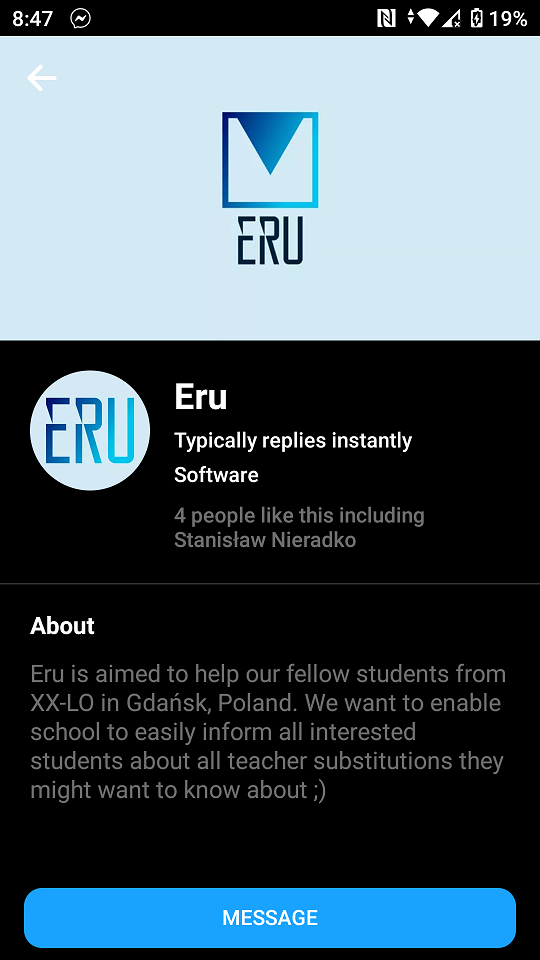
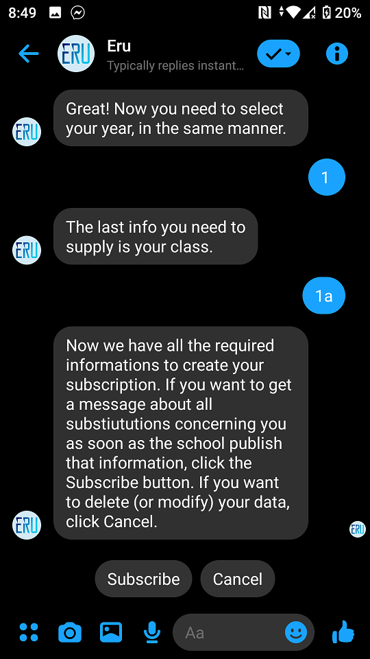
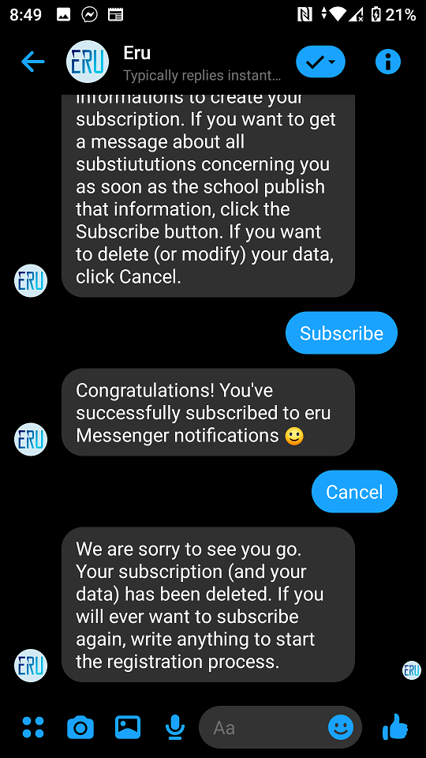

[PL] Facebook Messenger Open Beta
Jak dołączyć do bety
Nasze wymagania
Jesteśmy otwarci dla każdego, kto:
-
Uczęszcza do XX LO (Gdańsk, Polska)
-
Obiecuje zgłaszać ewentualne błędy do zespółu Eru :)
Wymagania Facebooka
Aby zarejestrować się jako deweloper na Facebooku, twoje konto musi być 'zweryfikowane'. Facebook uznaje konto za zweryfikowane gdy (1) posiada ważny i potwierdzony numer telefonu lub (2) posiada zweryfikowaną kartę płatniczą. Możesz sprawdzić czy masz zweryfikowany numer telefonu tutaj.

Tak powinna wyglądać ta strona, gdy masz zweryfikowany numer.
Jak zacząć?
Napisz do kogoś z zespołu Eru i poproś o dodanie jako tester do aplikacji. Chętnie dodamy każdego :)
Utwórz konto deweloperskie na Facebooku
Wejdź na stronę Facebook for Developers i kliknij 'Get Started'.

Zaakceptuj warunki użytkowania.

Być może zostaniesz również zostać zapytany o cel rejestracji - możesz wtedy wybrać opcję 'Other'. Od tego momentu masz aktywne konto developerskie na Facebooku :)
Zaakceptuj zaproszenie do aplikacji Eru
Jeżeli masz już konto deweloperskie i otrzymałeś zaproszenie do zostania testerem, wejdź na https://developers.facebook.com/requests/ w celu zaakceptowania go.

Zaakceptuj zaproszenie klikając 'Confirm'.

Voila! Od teraz możesz używać bota jako tester.
Zasubskrybuj powiadomienia o zastępstwach
Aby założyć subskrypcję, musisz napisać do strony Eru. Link do Messengera

Kliknij na przycisk by przejść do czatu.

Napisz 'hello' (lub cokolwiek innego) by rozpocząć proces rejestracji.

Wybierz język. Jeżeli pomylisz się na dowolnym etapie - kliknij 'Anuluj' i rozpocznij proces rejestracji ponownie.

Wybierz klasę do której chodzisz (pierwsza, druga lub trzecia).

Wybierz oddział do którego uczęszczasz. Pamiętaj, że lista jest przewijalna (po prostu przesuń palcem w lewo lub w prawo).

Potwierdź subskrypcję i czekaj na powiadomienia ;)

Jeżeli będziesz chciał zrezygnować z subskrypcji (lub rejestracji) po prostu kliknij Anuluj na dowolnym etapie.